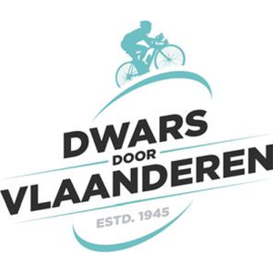

Verslag
Het lijkt wel alsof elke zichzelf respecterende West-Vlaamse stad of gemeente zijn eigen koers heeft: Na Kuurne, Harelbeke, Nokere, Middelkerke, De Panne, Bredere, Koksijde, Brugge en Wevelgem was het nu de beurt aan Waregem. En Waregems waar, dat is een kartje kilo meer. Wel, we kregen een spanningsboog tot op het einde in deze koers, daar kan een solist als Pogi nog wat van leren. We hebben in petto een gekleurd verslag van de koers, dus als je fan bent van Wout, lees dan vanaf * en als je geen fan bent, lees dan verder. De vraag was: zou Wout zich herpakken na vorig jaar de verloren sprint tegen…ja, ik ben zijn naam vergeten, koerst hij eigenlijk mee, bon..we kregen een razendsnelle start en moeten lang wachten op een kopgroep. In de strijd om die kopgroep vallen er al twee kansrijke Belgen weg: Teuns en Berckmoes, die opgeven. De eerste kopgroep wordt gevormd op berg Ten Houte, een groep van 20 sterke mannen, zonder Wout of Alpecienen. Die achtervolgen samen met Ineos. De Lie wordt gelost bergop voor de zoveelste Deliesillusie. We vlammen naar de Mariaborrestraat. En op de onderbossenaar trekt Wout stevig door. Nog voor de 2e keer Ten Houte komt alles weer samen. Daar nemen we afscheid van Lund Andresen, adieu en chapeau. Een drietal komt vooraan: Gachignard, Gregoire en Larsren. Ondertussen krijgt Ganna een andere fiets. De Eikenberg lonkt. Opnieuw pech voor de Italiaanse tijdrijder: stuur kapot. Van Aert gast en niemand volgt. Gachignard kraakt. Op Nokereberg gaat Gregoire overboord en op de lange hellende strook van de Nokere Koerse aankomst ziet het peloton de leiders met nog 10 kilometer te gaan. Van Aert gaat er alleen vandoor, hij wil natuurlijk vermijden opnieuw geklopt te worden in een sprint. Maar het peloton aarzelt niet en komt dichter en dichter bij Van Aert. Op 3 van de meet bundelen 2 hardrijders de krachten: Florian en Filippo. Het is Ganna die makkelijk over een leeggereden Wout springt en onderscheidt zichzelf zo in de universiteit van het wielrennen. Wout houdt zoals wel vaker plaats twee vast en Waerenskjold sprint nog sterk naar stek 3
*Shit! Wacht maar tot zondag… En hét wielernieuws van de dag was natuurlijk de overwinning van Jin Chenhong in de Princess Maha Chakri Sirindhorn’s Cup Women’s Tour of Thailand, het kan nog langer dan in flanders fields enz.
In megabike is de dagzege duidelijk voor Frederik Das, Peter Hellebuyck (Nokere Berg) wordt 2de, Dominique Neels wordt 3de.
De tussenstand ziet er na DDV, weer wat anders uit Daan Van Breedam zit niet langer meer in de top 3. Liesbeth Christiaens (De stoempers) blijft op kop, voor Arnout Verkaemer (Jaspers en de Outsiders) en voor Brecht van Breedam. Organisator Arnout neemt dus eigenlijk de plaats in van Daan, maar alles staat nog kort op elkaar.
Uitslagen, Tussenstand & optimale ploeg kan je vinden onder het verslag op de website: https://jolly-bohr-326994.netlify.app/
Wil je nog meer statistieken dan kan je verder zoeken via het menu statistieken.
Sportieve groeten,
Stijn, Arnout & Fred